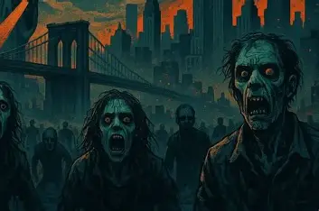

A zombie apocalypse were to happen in 2025, the best way to stay safe would be to prepare ahead of time. Keep an emergency kit with food, water, a flashlight, batteries, and a first-aid kit. Avoid crowded areas where infection could spread quickly, and stay informed through reliable news and emergency alerts. Work together with trusted friends or family, stay calm, and always have a plan for a safe place to shelter. While zombies are fictional, being prepared for emergencies is a smart habit that can help in many real-life situations.
In the fictional 2025 zombie apocalypse, a mysterious virus spread across the world, turning millions of people into flesh-eating zombies. Cities quickly fell into chaos as governments struggled to contain the outbreak. Small groups of survivors worked together to find food, shelter, and safety while avoiding dangerous zombie hordes. Despite the fear and destruction, many people showed courage, proving that hope and teamwork could survive even in the darkest times.
click here to learn more
